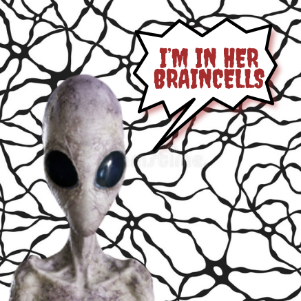

I don’t know if this is some sort of alien cell, but why does everything people do seem weird to me?? EVERYTHING. NO EXCEPTIONS. like sleeping on a bed, weird. sitting on a chair to eat, weird. having words and sound come outta your mouth, weird. The weirdest thing I saw today was someone crossing their amrs. It never makes sense to me. The word “weird” is even weird to use in this case!
I don't wanna give birth cause a poo after a good meal hurts, so how aout an entire human species? yup. painful. the entire process is painful and under appreciated. mothers really carry an entire human in them and are still expected to work as hard as a person carrying themselves only. Let’s make Mother’s Day everyday honestly! I really think the people who decide to do this are heroes, but u don’t think I will want to do it. Another humans responsibility is too much. p.s: I wouldn't mind going through pain but for something worth it to me, not that.
Whyyyy are things too serious??? Really I don't get why people, including myself act like we're living forever or something. I don't mean that being carefree about everything is the best way to live. It's more about the routines we have and the lifestyles we're set to live. Like schools for example should be taken a little less suriously. Let's be more easygoing as a society, but not dumb.
The reason my image gallery is called "galleray" is because I was listening to Valerie while creating it, which ryhmes with gallery. Amy Winehouse doesn't say it like it tho, but she says "Valeraaay", so I thought well let's make that rhyme as well.
|  |